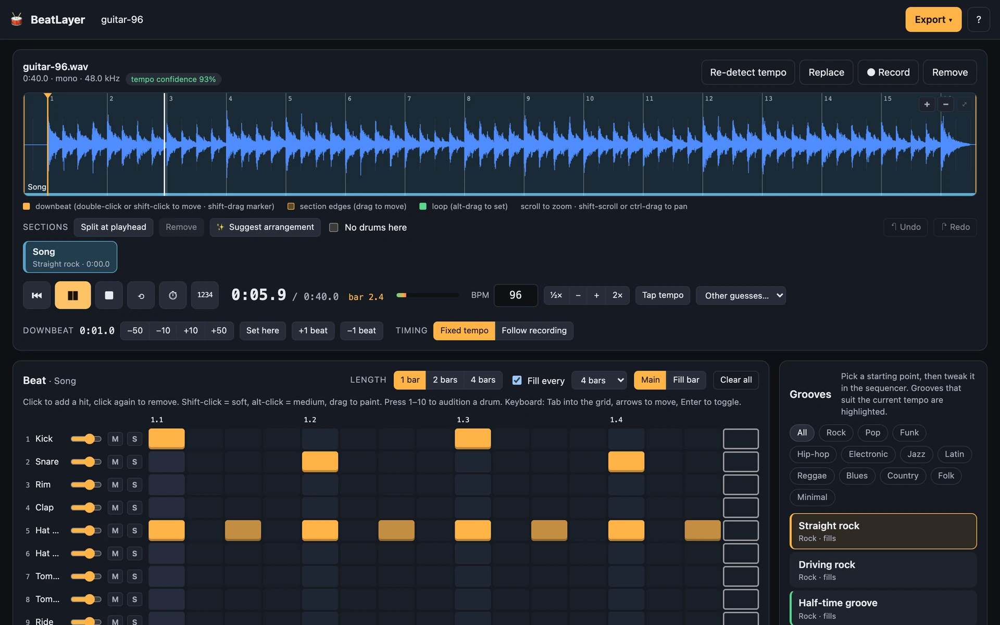

Constraint
The grid must follow the player’s take rather than forcing the take to a click.
CASE / Audio / instrument
Drop in a guitar take and add synthesized drums in its tempo.

HOW IT HOLDS UP
Beat detection, browser synthesis and the playable instrument.
The grid must follow the player’s take rather than forcing the take to a click.
Find beats in the provided audio, synthesize every drum in Web Audio, and export a stem without uploads.
Live browser instrument with a straight-rock groove and local audio processing.
KEEP READING